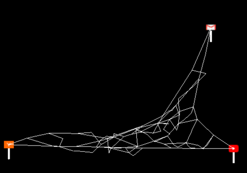

Manage attention online like spiders do, by building webs.
There's good reason to argue that spiders use their webs as an integral part of their minds ( nice article here ). By creating and manipulating webs of their silk they build systems for modulating their limited attention. When a spider is hungry it tensions its web so it can respond more quickly to smaller prey . How that works can in part be explained by the acoustics of spider silk . Spider silk is an amazing nanomaterial which happens to have the largest wavespeed range of any known material, making it ideal for the kind of acoustic filter networks spiders need to offload some of the sensory analysis problems inherent in the way they catch prey.
Humans are already pretty similar to spiders in this way - we too manage attention on our personal webs via modulated vibration. The notifications on our phones let us know when there is content available to prey on. But ironically, for all the technical spectacle that leads up to our phones buzzing after something happens online, our tools for managing the direct affect on our limited attention lags behind those of the humble spider by millions of years.
Spinneret is an experiment in treating the most common technological interface to human attention, buzzing phones, like spiders treat their webs.
A 3D physics simulation of a web of strands is used to decide when and how intensely your phone vibrates. Web services which you would like to receive notifications from are caught on the periphery of the web and shake when they have activity to notify you of. You can add and remove strands, supports, and services. Strands can also be shortened or lengthened, which changes how much vibration they will filter or carry.
Created as a design project for MAS.S63: Cognitive Augmentation so it's pretty messy and probably won't get finished.
What's left to do:
2017